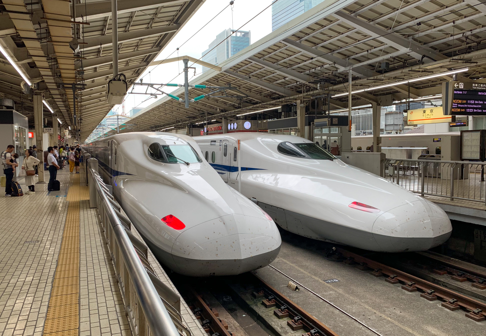
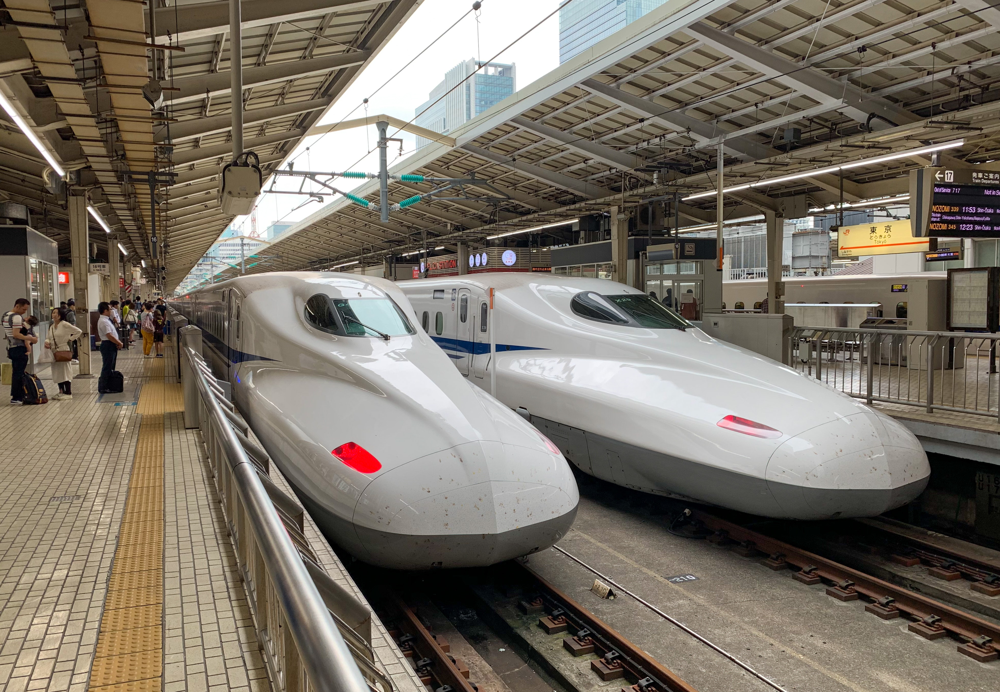

Transportation - Shinkansen
If you're looking to travel between the eight regions of Japan, the Shinkansen (bullet train) is sure to be the
best option available where the ride is smooth, fast, punctual, and comfortable. The bullet trains in Japan are able to
reach nearly 200 miles per hour. As such, it only takes around 2½ hours to reach Tokyo from Osaka using the fastest shinkansen.
Classes
The cars of a shinkansen are separated by class: Gran Class, Green Car, Ordinary.
Gran Class is an option offered only on certain rail lines, including the Tohoku Shinkansen and Hokkaido Shinkansen,
so it is not available for those traveling between Osaka and Tokyo.
Passengers can are given a first-class experience with luxury seating, gourmet meals with locally-sourced ingredients,
and attendant service (not all lines offer every service listed). Travelers may also receive a special gift.
Green Car could be considered the business class of shinkansen and are limited. Although not as luxurious, the seats
offered in this class are still spacious and reclinable, and offer free drinks, a hot or cold towel (depend on the
current season), and a guaranteed seat on the train. This option is perfect for those looking for a less-crowded car or
extra comfort, or those traveling during the busy seasons such as Golden Week.
Ordinary is the cheapest option and requires no reservations, although it is possible to do so. This section
has more seats in each car and offer a generous amount of foot space. The backs of the seats in the ordinary car can
be shifted based on preference, allowing passengers to sit with their co-travelers.
Train Lines
For travel between Tokyo and Osaka via shinkansen, you will need to take the Tokaido Shinkansen line. This line offers
three options:
The Nozomi train is the quickest option, as it only stops at the major stations situated between Osaka and Tokyo and takes 2½ hours.
Hikari is the next fastest with a trip that lasts around three hours. It departs the station every 30 minutes and
stops in major cities (dependent on the train).
The Kodama takes around four hours to arrive in Tokyo and stops at every station between the two regions. Most of the
cars in this train are non-reserved.
Meals
Food will be the least of your worries when riding a shinkansen. Not only are there food & drink carts that make rounds
between the train cars, but travelers also have the opportunity to purchase meals in the station — both before
crossing the turnstile and at the platform. One of the most popular options is the 'ekiben' or 'train lunch box'.
Ekiben are premade meals that are sold both at the station and inside the train that come in a variety of options, such as
katsu-sando sushi, and gyudon. The types of ekiben available depend on the region, and some even come in special boxes
that can be kept as souvenirs. The prices vary depending on the size and type of ekiben, and can be as cheap as $10 and as
expensive as $30.
All shinkansen cars have seats with trays attached, so that travelers can enjoy their meals.

 
